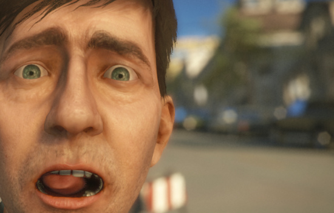

Depth of Field
Depth of Field is a common postprocessing effect that simulates the properties of a camera lens. This version is a more modern and sophisticated version of the old Depth of Field 3.4 effect that works especially well with HDR rendering and a DirectX 11 compatible graphics device.
In real life, a camera can only focus sharply on an object at a specific distance; objects nearer or farther from the camera will be somewhat out of focus. The blurring not only gives a visual cue about an object's distance but also introduces Bokeh which is the term for pleasing visual artifacts that appear around bright areas of the image as they fall out of focus. Common Bokeh shapes are discs, hexagons and other shapes of higher level dihedral groups.
While the regular version only supports disc shapes (generated via circular texture sampling), the DirectX 11 version is able to splat any shape as defined by the Bokeh Texture.
An example of Depth of Field effect can be seen in the following image, displaying the results of a focused foreground and a defocused background..

The DirectX11 version of this effect can create nicely defined bokeh shapes at a very reasonable cost.
The DirectX11 version of this effect can create nicely defined bokeh shapes at a very reasonable cost.
As with the other image effects, this effect is only available in Unity Pro and you must have the Pro Standard Assets installed before it becomes available.
Properties
| Focal Settings | |
| Visualize | Overlay color indicating camera focus. |
| Focal distance | The distance to the focal plane from the camera position in world space. |
| Focal Size | Increase the total focal area. |
| Focus on Transform | Determine the focal distance using a target object in the scene. |
| Aperture | The camera's aperture defining the transition between focused and defocused areas. It is good practice to keep this value as high as possible, as otherwise sampling artifacts might occur, especially when the Max Blur Distance is big. Bigger Aperture values will automatically downsample the image to produce a better defocus. |
| Defocus Type | Algorithm used to produce defocused areas. DX11 is effectively a bokeh splatting technique while DiscBlur indicates a more traditional (scatter as gather) based blur. |
| Sample Count | Amount of filter taps. Greatly affects performance. |
| Max Blur Distance | Max distance for filter taps. Affects texture cache and can cause undersampling artifacts if value is too big. A value smaller than 4.0 should produce decent results. |
| High Resolution | Perform defocus operations in full resolution. Affects performance but might help reduce unwanted artifacts and produce more defined bokeh shapes. |
| Near Blur | Foreground areas will overlap at a performance cost. |
| Overlap Size | Increase foreground overlap dilation if needed. |
| DX11 Bokeh Settings | |
| Bokeh Texture | Texture defining bokeh shape. |
| Bokeh Scale | Size of bokeh texture. |
| Bokeh Intensity | Blend strength of bokeh shapes. |
| Min Luminance | Only pixels brighter than this value will cast bokeh shapes. Affects performance as it limits overdraw to a more reasonable amount. |
| Spawn Heuristic | Bokeh shapes will only be cast if pixel in questions passes a frequency check. A threshhold around 0.1 seems like a good tradeoff between performance and quality. |
Comparison between DirectX11 and DiscBlur settings
Smooth transitions are possible with the high resolution DX11 version (albeit at a high performance cost).

Due to the nature of the standard DiscBlur texture sampling approach, the maximum blur radius is limited before sampling artifacts become appearant. Also, only spherical Bokeh shapes are possible.
About DirectX 11 Bokeh Splatting
This powerful technique enables proper Scattering, however due to high demands on fillrate, it should be used with care. The parameters Spawn Heuristic and Min Luminance control when and where Bokeh Sprites will be placed. If pixels don't pass a luminance and frequency check, a simple Box Blur will be used instead. It's however hard to notice as it uses the same kernel width as the Bokeh sprites.
The following pictures show that the road, that is neither bright nor bears great frequency changes can just be blurred with a simple box filter without ruining the overall Bokeh experience.

Example with small Max Blur Distance
Example with big Max Blur Distance
Hardware support
This effect requires a graphics card with pixel shaders (3.0) or OpenGL ES 2.0. Additionally, depth texture support is required. PC: NVIDIA cards since 2004 (GeForce 6), AMD cards since 2005 (Radeon X1300), Intel cards since 2006 (GMA X3000); Mobile: OpenGL ES 2.0 with depth texture support; Consoles: Xbox 360, PS3.
All image effects automatically disable themselves when they can not run on end-users graphics card.
Page last updated: 2012-09-26